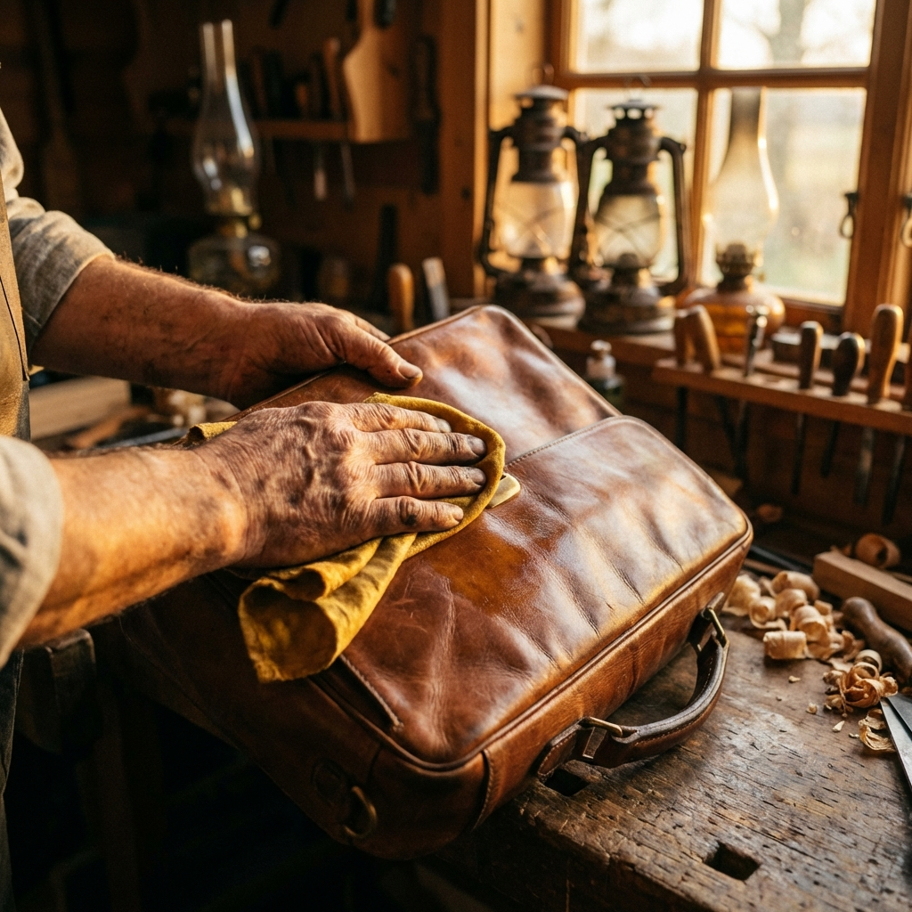

Leather & Suede Revival
Vintage leather bags and jackets tell a story, but time can fade their rich patina. Our artisans clean, re-dye, and condition your leather goods, bringing back their original luster while preserving their character.
Bridal & Lace Preservation
Some garments are too precious to risk. Whether it's a vintage veil or a modern couture gown, our restoration team uses museum-grade techniques to repair tears, remove yellowing, and preserve the delicate lace for generations to come.